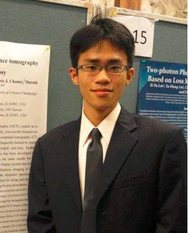

|
For God has not given us a spirit of timidity, but of power and love and discipline. 2 Timothy 1:7
Hello! I just graduated from PhD in May 2019 and am currently a full-time researcher at Google Brain. During my PhD (class 2014), I worked with Prof. Jitendra Malik in the Vision group at University of California Berkeley. I graduated from National Taiwan University summa cum laude (top 1% in class). In addition, I was the Berkeley Graduate Fellowship recipient of EECS department. My research interests are Computer Vision and Machine learning for instance-level understanding and medical imaging
In summer 2015, I interned with Prof. William T Freeman and Ce Liu at Google Research. In summer 2016, I worked as a research intern at Apple to develop video analysis algorithm by unsupervised sequence learning techniques. Since the spring of 2017, I have been working with Dr. Esther Yuh and Dr. Pratik Mukherjee in UCSF on head trauma CT scan analysis. From May 2018 to May 2019, I was an intern/student researcher at Google Brain working on object recognition/segmentation.
My email is wckuo AT berkeley DOT edu, or weicheng AT google DOT com.
|

|
|
Recent Publications
Expert-level detection of acute intracranial hemorrhage on head computed tomography using deep learning
Weicheng Kuo, Christian Haene, Pratik Mukherjee, Jitendra Malik, Esther Yuh
Proceedings of National Academy of Science (PNAS), 2019.
paper link, Berkeley News.
|
ShapeMask: Learning to Segment Novel Objects by Refining Shape Priors
Weicheng Kuo, Anelia Angelova, Jitendra Malik, Tsungyi Lin
ICCV, 2019 (Oral).
pdf, code, Google AI Blogpost, Tutorial.
|
Cost-Sensitive Active Learning for Intracranial Hemorrhage Detection
Weicheng Kuo, Christian Haene, Esther Yuh, Pratik Mukherjee, Jitendra Malik
MICCAI, 2018.
pdf
|
PatchFCN for Intracranial Hemorrhage Detection
Weicheng Kuo, Christian Haene, Esther Yuh, Pratik Mukherjee, Jitendra Malik
pdf
|
From Lifestyle VLOGs to Everyday Interactions
David Fouhey,Weicheng Kuo, Alyosha Efros, Jitendra Malik
CVPR, 2018.
project website pdf
|
DeepBox: Learning Objectness with Convolutional Networks
Weicheng Kuo, Bharath Hariharan, Jitendra Malik
ICCV, 2015.
pdf bibtex abstract code
|
|
Teaching
CS188 Artificial Intelligence (Spring 2016)
Instructors: Pieter Abbeel, Anca Dragan. Course Page
|
CS189 Machine Learning (Fall 2015)
Instructors: Alyosha Efros, Isabelle Guyon. Course Page
|
CS294-131 Special Topics in Deep Learning (Spring 2017)
Instructors: Dawn Song, Trevor Darrell. Course Page
|
|
Former Publications
Virtual spatial modulation microscopy for resolution improvement
Weicheng Kuo, Yuan-Ta Shih,Hsun-Chia Hsu, Yu-Hsiang Cheng,Yi-Hua Liao,and Chi-Kuang Sun
Optics Express, 2013.
pdf
|
Real-time 3D OCT-guided core-needle biopsy
Weicheng Kuo, Jongsik Kim, Nathan D. Shemonski, Eric J. Chaney, Darold R. Spillman, Jr., and Stephen A. Boppart
Biomedical Optics Express, 2012, featured on the journal cover.
pdf
|
Blu-ray DVD lens as the objective of two-photon emission fluorescence microscope
Hsiang-Yu Chung,Weicheng Kuo,Yu-Hsiang Cheng,Che-Hang Yu,Shih-Hsuan Chia,Cheng-Yung Lin,Jie-Shin Chen,Huai-Jen Tsai, Andrey B. Fedotov, Anatoly A. Ivanov, Aleksei M. Zheltikov, and Chi-Kuang Sun
Optics Express, 2013
pdf
|
Quantitative analysis of intrinsic skin aging in dermal papillae by in vivo harmonic generation microscopy
Yi-Hua Liao,Weicheng Kuo,Sin-Yo Chou, Cheng-Shiun Tsai, Guan-Liang Lin, Ming-Rung Tsai, Yuan-Ta Shih, Gwo-Giun Lee, and Chi-Kuang Sun
Biomedical Optics Express, 2014
pdf
|
|